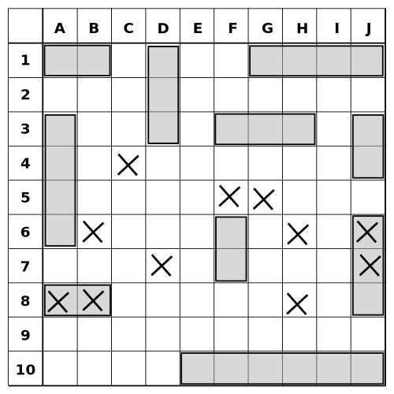

Hosting Company

Hosting Company

Este fue mi primer proyecto, lo hice con un pana que conocí en la uni, le decíamos Zucky, él y yo dijimos que necesitábamos conectar más gente entre ellas y bueno, así fue como nació Facebook, lo lanzamos en 2004. Igual fue bastante interesante el principio porque tuvimos que hacer grandes bases de datos, porque todos los universitarios querían entrar. Pero como la Big Data es lo mío, no tuvimos problema.
 Haz click aquí para ver la asombrosa página que creé
Haz click aquí para ver la asombrosa página que creé
Snapchat
Después de que me separé de Zuky
La última ejecución del proyecto fue en marzo del 2019 cuando fue entregado.
Battle ship
Este fue mi primer proyecto, programado en Java con el IDE de Netbeans a principios del 2019. El proyecto consistió en un juego de BattleShip el cual se jugaba con la computadora y se imprimía en la consola, el mismo iba mostrando según la dificultad, ciertos poderes. Dicho proyecto se basó en la programación dedicada a objetos donde los barcos heredaban de una clase padre la mayoría de sus atributos.
La última ejecución del proyecto fue en marzo del 2019 cuando fue entregado.